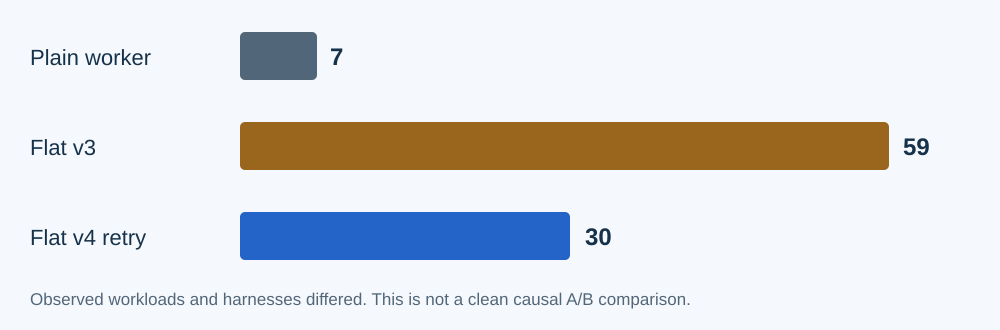

Parity correction and evidence.
Judge each behavior against its original purpose. Backend checks, actual actor use, remaining gaps and owner acceptance stay separate.
Current correction: starter 3
The replacement default restores the established request-bundle lifecycle, replayable plan/history, exact-source and attachment checks, typed dependencies/handoffs, legal steering/reopen behavior and journal recovery. Learning uses canonical NOTE history rather than a second single-JSON store. Operational restoration includes names, checked Director identity, SitRep cadence, capability/effort, requirement trace, touched-knowledge upkeep, daily metadata discovery and safe-update rules.
Independent validation exercised 17 distinct restored-default/backend cases, including an actual disposable Git commit/clone that continued the same project identity, backlog and source attachments. Two harness defects were repaired and affected cases rerun; original failed logs were retained. This is static/backend evidence, not native cold startup, actual five-minute cadence, authenticated human acceptance or successful safe-update application.
The unreleased source candidate has completed its scoped source acceptance gates; the validation history below preserves both progress and limits. Validation-v1 had 17 independent cases plus 74 other distinct cases (not one 91-case run). A later forensic case found its accepted-structure selection guard was still wrong. Validation-v2 restored explicit proposal kinds and passed a focused repair case; a subsequent one-line retirement-status repair also passed its strengthened focused case (4.319 seconds). The prior 17-plus-74 cases were reused, not broadly rerun. That is why test counts are not a perfect-parity claim. Actual new-backend Cedar and fresh Ember/Fern observations showed explicit-rule scoped use and record recovery, not paid-review initiation. The seven-case audit overview is the current obligation-by-obligation coverage and limits map; the local development/DESIGN_NOTES.md record performed checks and remaining actual-actor cases. Source publication, local installation and user acceptance remain separate. No claim of perfect parity follows.
Seven intent cases
These are version-bound findings: old core 741769b, first flat 8db49cb, and local starter 3 validation candidates. “Met” credits a bounded property; “partial” preserves a useful result while naming what is missing. None is a global parity score or candidate approval.
| Why it existed | First flat outcome | Good retained and loss | Mechanism / test gap | Correction proof and unknown |
|---|---|---|---|---|
| 1. Custody and lifecycle Keep source, assets, history and truthful acceptance through restart. | Partial: some exact bytes/retries survived. | Shared source, managed evidence, waiting gates and plan/reopen history were incomplete. | Old tests still targeted the old helper; the new default had another store. | Old and corrected bundles met seven exercised obligations. Injected recovery is not power-loss proof. |
| 2. Active discovery and updates Catch up without repeated alerts or destructive replacement. | Unmet on the first new default. | Legacy update files survived, but the new trigger/helper route was absent. | Preserved files were mistaken for an available capability. | Rolling-24h/helper/preferences and safe-update contract restored; no real adaptation/update application proved. |
| 3. Whole delivery and recovery Keep independent outcomes, steering, gates and parent trace intact. | Partial with useful same-worker steering. | Useful artifacts survived; parent trace and external acceptance guards were incomplete. | Fixture successes did not cover every obligation and handoff reason. | Cedar reopened correctly; fresh recovery kept old outcomes and a blocked approval. No live foreign handoff or natural full A/B/C proof. |
| 4. Upkeep and paid learning Keep current knowledge accurate without free all-history memory. | Mixed: real bounded review and later scoped use. | Separate touched-guide upkeep was omitted; repair-v1 also lost the typed structure guard. | 91 scoped cases missed promotion of structural text into knowledge. | Typed selection repair passed a focused check; explicit persisted-rule use worked. The strengthened retirement-status check also passed; new-backend paid-review initiation is unproved. |
| 5. Growth and composed knowledge Stay flat; add coordination only when it earns its cost. | Partial: Art knowledge and a different tester worked. | Useful composition retained; no new department was organically discovered. | The harness authored the header and roles before the task. | Selection guards/caller aliases restored. Temporary-Director escalation, new-department implementation and later uptake remain unproved. |
| 6. Clone continuity and privacy The next machine needs the same work; exact public history persists. | Default clone continuity unmet; privacy benefit partial. | No-clobber/refusal was useful; the private default hid durable work from clones. | The new path was not exercised by the old continuity tests. | A real local clone continued the store; UUID and private opt-outs retained. Actual public warning delivery and concurrent multi-host merging are not proved. |
| 7. Staffing, identity and complete reads Choose effort/checks, recognize owners and prevent false loaded claims. | Partial: separate reviewers and useful supervision survived. | Effort/tier evidence, names, checked badge, SitRep and outer-result guidance weakened. | Harness-supplied names/settings did not test these duties. | Contracts restored; Cedar checked route facts and recovered a truncated read. Native cold startup, adaptive effective settings and five-minute cadence remain unproved. |
The first refactor was not uniformly bad. Flat optional coordination, bounded paid learning and selected knowledge composition had observed value. Preserving old files or passing a large count of tests did not establish that every intended behavior reached the new default.
The canonical local investigation files are development/BEHAVIOR_PARITY.md and the behavior-preservation section of development/DESIGN_NOTES.md. This updated guide and investigation remain local and unpublished. They preserve the historical published baseline, not a claim that other projects adopted the correction.
Source readiness progression
The seven-case forensic comparison below is retained as immutable, version-bound history. This checklist tracks later confidence work separately; it does not turn those findings into a global parity claim.
Current status: the bounded source patch and selected published baselines are accepted. Starter 3 is a published source candidate, with no new formal release tag. Starter 3 validation-v4 adds explicit descendant staffing obligations: a worker permitted to delegate must first load the operational staffing and selected role guards, then apply the same capability, effort, verification and honest-settings policy at that depth.
| Gate | Recorded state | What closes it / practical limit |
|---|---|---|
| Seven intent studies | Root accepted the version-bound findings. | Preserve demonstrated value, losses and unknowns; acceptance of findings is not candidate approval. |
| Canonical backend and typed learning guards | 92 scoped cases reported passing across the recorded checks; final source accepted within its stated scope. | Retain original failures, focused repairs and actual coverage. No blanket human-identity, crash/power-loss or cross-host guarantee. |
| Final source and staffing route | Root accepted the scoped source confidence results. | Actual three-actor work exercised descendant staffing and independent checks; pinned three-way comparison, conflict/rollback and real metadata checks passed. The SitRep timing oracle missed its earliest boundary by 5.778 seconds (264.222 seconds, about 4.4 minutes); this was retained as a nonblocking limit. |
| Selected target integrations | Root accepted the selected published baselines and integration results. | All selected target commits were normally pushed and remote-verified. My Work's three active templates match their committed overlays and typed guard. Their canonical stores, authority and privacy choices remain project-owned; this is not proof for every project. |
| Source publication | Core source and all three selected target commits are pushed and remote-verified. | The exact core source commit and selected target commits are recorded below. This final status-only documentation follow-up changes no core payload. The source candidate is unreleased: no separate tag, website deployment or app release is implied. |
| Broader behavior | Only observed claims may be marked proved. | Assigned observations used inherited source context; they do not prove native unassigned cold startup. The strict early SitRep miss remains recorded. General periodic cadence, automatic adoption, organic department growth, global historical learning and economy over plain execution remain unproved beyond the named scoped checks. |
Verified technical and publication gates
| Scope | Verified commit |
|---|---|
| Director Pattern core source | b237023cfb2f23fadb70d5d4ec7d7ce063bd8b43 |
| Runway integration | 9139612456115dbb463d81a80ccfff990caea4ef |
| Understudy integration | 0861794792e0d34c94a366a28abd885ca8fdd1cf |
| My Work / active templates | 53cb4fa163b075cc4cf583c239d7b542550157e8 |
Starter 3 is the source-package format, not a new formal release version. The accepted core commit is b237023cfb2f23fadb70d5d4ec7d7ce063bd8b43, pattern tree f013825b404cf9efb3bdfe9506c25e490ac59d4e, with validation-v4 manifest SHA-256 d08f339be0094cac7fd0b81a4057bfaa6aed255cac5a318e5e7229696e68b124. The digest is not a Git commit. The later documentation-only commit preserves this exact core payload; no circular self-commit literal is required.
Historical starter 2 trials, retained
The following results describe the earlier starter 2 prototype at 8db49cb. Its trial snapshots were named v3/v4; those names are not starter version 3. The successful small workflows and 84-test run missed the confirmed plan-history, terminal-steering and earlier-source-integrity defects. They are not replacement-backend parity evidence.

| Observed slide phase | Actors | Calls | Recorded aggregate tokens |
|---|---|---|---|
| Plain worker | 1 | 7 | 270,599 |
| Flat v3 | 2 | 59 | 2,475,895 |
| Flat v4 retry | 2 | 30 | 1,242,879 |
Token totals include cached input. The v3 slide total excludes later mature-project and overlap work. V4 changed two instruction files, exact-path handoffs and the harness together; it is not a clean causal A/B comparison. Dollar cost is unknown. Efficiency over plain execution was not demonstrated.
What the earlier tests observed
- 84 development tests passed: 20 starter and 64 legacy tests. The v4 instruction-only retry reused unchanged helper/API/installer evidence.
- Nine fresh explicitly assigned subjects returned and were evaluated. Corrected six-slide artifacts passed independent rendering, navigation and content checks.
- An active owner initiated a due bounded review, accepted scoped knowledge and a later fresh worker applied customer knowledge without leaking it into training output.
- A mature fixture loaded project-owned roles/header and retained a separate independent tester.
- A controlled probe completed foreground work while a reviewer remained unfinished. The artificial hold did not prove simultaneous inference or a natural response-time guarantee.
What remains unproved
Native unassigned cold startup, broad reliability, offline review and comprehensive cross-batch trend detection remain unproved. Missing-path startup attempts were retained. An incorrect timestamp was explicitly corrected with history; original misses were not erased.
Public source: Flat starter walkthrough and validation notes.